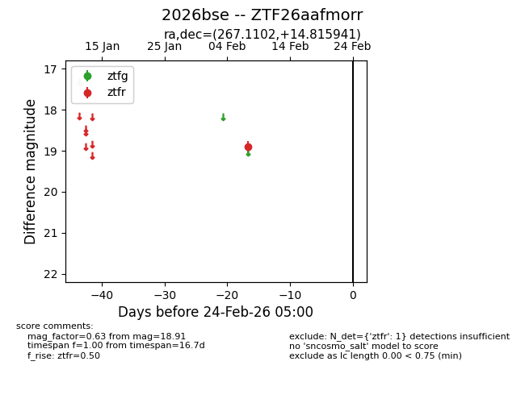
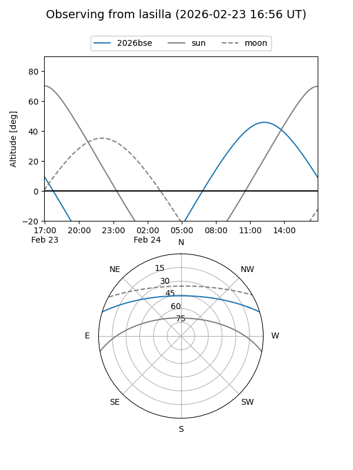
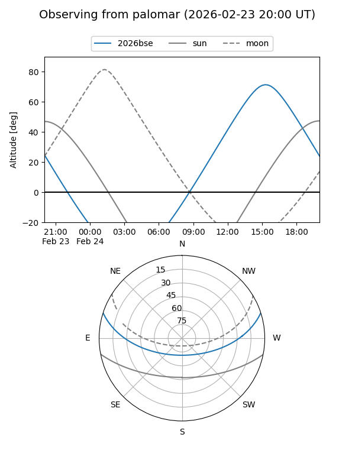

2026bse
Target 2026bse at 2026-02-24 09:08
Aliases and brokers:
FINK: link
Lasair: link
ALeRCE: link
TNS: link
YSE: link
alt names
ZTF26aafmorr (ztf,fink_ztf)
2026bse (tns,yse)
Coordinates:
equatorial (ra, dec) = 267.1102,+14.81594
equatorial (HMS+DMS) = 17:48:26.46,+14:48:57.39
galactic (l, b) = (39.5485,+20.49573)
Flags:
Photometry:
last ztfr=18.91
1 ztfr detections
Lightcurve

Visibility


Additional plots